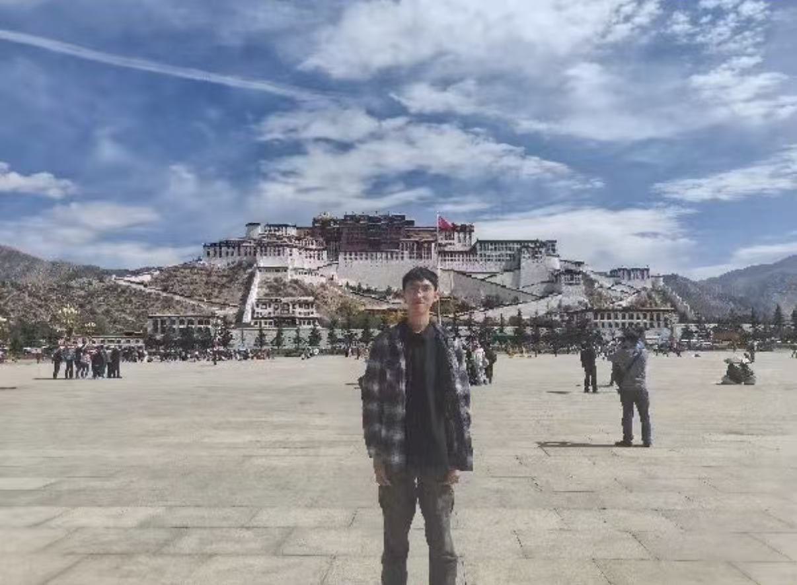
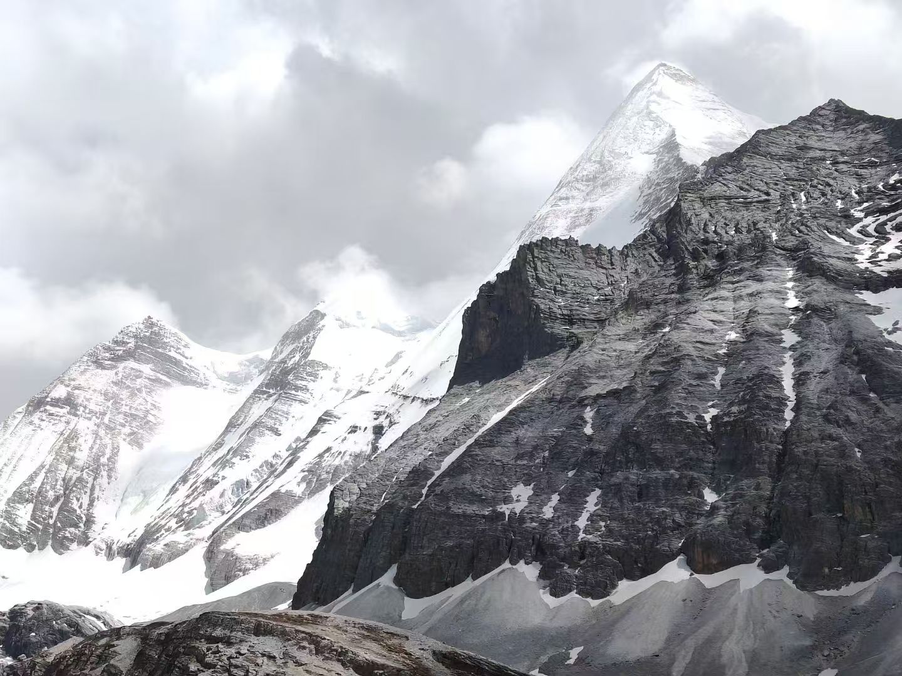
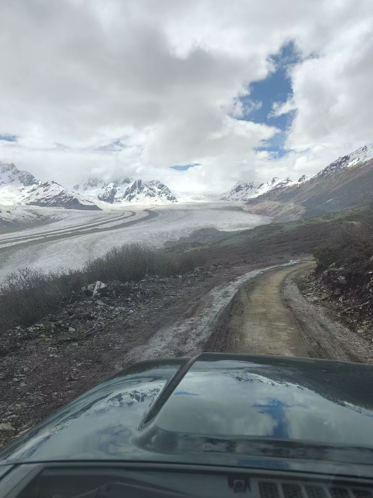

About
Outside the lab, I enjoy traveling, driving, and exploring the mountains.



Research experience
- 2026–present
MAPLE Lab, Vanderbilt University
Vision-based force estimation, stereo contact detection, and dVRK-Si dynamics.
- 2024–2026
RF Laboratory, Vanderbilt University
Fast electromagnetic–RF co-simulation and RF-heating reduction for patients with DBS implants.
Education
- 2023–2027
Vanderbilt University
B.E. in Electrical and Computer Engineering and Mathematics, minor in Computer Science.